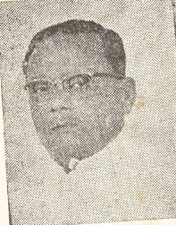
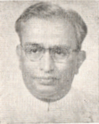
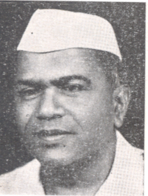

1_Upload_2923.pdf

आरिअर जी तारीख: १६ अप्रैल १९६२
आरिअर जो किस्म:वज़ीरन जी वाउंसल
सफ़्हओ2/2

सऎ सफ़हा

मनुभाई शाही
फर्ज़ ठुरिअ:
वापार ۽ सनात जी वज़ारत[ममलकती वजीर]

बी. एन. दातार
फर्ज़ ठुरिअ:
गहरो मामलन जी वज़ारत[ममलकती वजीर]

जयसुखलाल हाथी
फर्ज़ ठुरिअ:
मज़दूरन जी वज़ारत[ममलकती वजीर]
.jpg)
एन. लक्ष्मी मेनन
फर्ज़ ठुरिअ:
वज़ारत ख़ारिजा[ममलकती वजीर]

कोठा रघुरमैया
फर्ज़ ठुरिअ:
वज़ारत दिफ़ा[ममलकती वजीर]

बाली राम भगत
फर्ज़ ठुरिअ:
ख़ज़ानी जी वज़ारत[नायब वजीर]

मोनो मोहन दास
फर्ज़ ठुरिअ:
साईंसी तहक़ीक़ ۽ सक़ाफ़्ती मामलन जी वज़ारत[नायब वजीर]

शाह नवाज खान
फर्ज़ ठुरिअ:
रेलवी वज़ारत[नायब वजीर]

ए. एम. थॉमस
फर्ज़ ठुरिअ:
काढ़ी जी वज़ारत[नायब वजीर]

रामचंद्र मार्तंड हजारनवीस
फर्ज़ ठुरिअ:
कानून ۽ इंसाफ जी वज़ारत[नायब वजीर]

एस. वी. रामास्वामी
फर्ज़ ठुरिअ:
रेलवी वज़ारत[नायब वजीर]

अहमद मोहिउद्दीन
फर्ज़ ठुरिअ:
विरांसपोर्ण जी वज़ारत[नायब वजीर]
मुवासलात जी वज़ारत[नायब वजीर]
तारकेश्वरी सिन्हा
फर्ज़ ठुरिअ:
ख़ज़ानी जी वज़ारत[नायब वजीर]

पूर्णेंदु शेखर नस्करी
फर्ज़ ठुरिअ:
ठुम ۽ हाइवसिंग जी वज़ारत[नायब वजीर]
सप्लाई जी वज़ारत[नायब वजीर]

बय्या सूर्यनारायण मूर्ति
फर्ज़ ठुरिअ:
इम्यूंढी ङ्वलपमेना ۽ तआवुन जी वज़ारत[नायब वजीर]
तआवुन जी वज़ारत[नायब वजीर]

टी. एस. सौंदराम
फर्ज़ ठुरिअ:
तालीम जी वज़ारत[नायब वजीर]